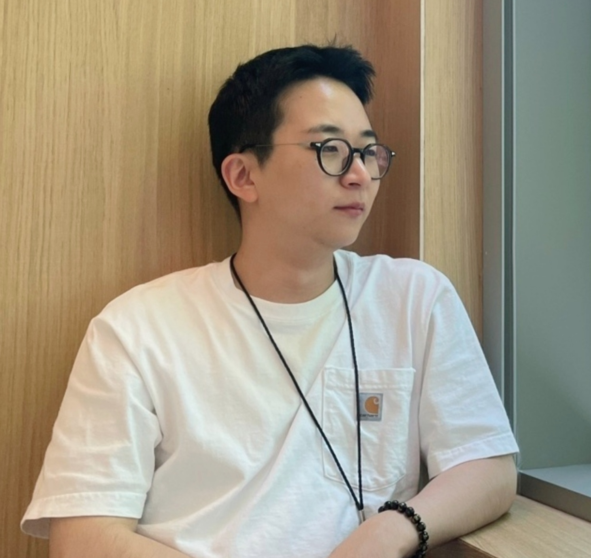

Seok-Ju Hahn
Seok-Ju Hahn
(Suck-Zoo)

Hi, I’m Seok-Ju! I am a postdoctoral appointee in the Mathematics and Computer Science Division at Argonne National Laboratory.
I develop adaptive optimization methods for reliable networked learning systems, especially federated and decentralized settings where data distributions, computational resources, communication patterns, and participant objectives are heterogeneous.
My work connects personalized federated learning, online decision-making, privacy-preserving data collaboration, and resource-aware distributed optimization, with applications in edge/IoT systems, healthcare, and industrial machine learning.
In my free time, I sing 🎤 R&B and do kettlebell 🐮🔔 swings. I am open to new collaborations and opportunities. Let’s connect!
Research Highlights
- Personalized federated learning. Developed SuPerFed, which connects global and local models through low-loss subspaces for personalization under statistical heterogeneity (KDD 2022).
- Adaptive decision-making for collaboration. Developed AAggFF, which unified and reframed long-term performance fairness in federated learning as online optimization over aggregation weights (ICML 2024).
- Privacy-preserving data collaboration. Developed Diffusion Federated Datasets, a cooperative sampling framework that composes pretrained local diffusion models without exchanging model parameters and supports optional differential privacy (NeurIPS 2025).
- Networked ML systems. Current work studies generalization-aware local computation and adaptive inference under distribution shift.
sjhahn11512 [at] gmail [dot] com
hahns [at] anl [dot] gov